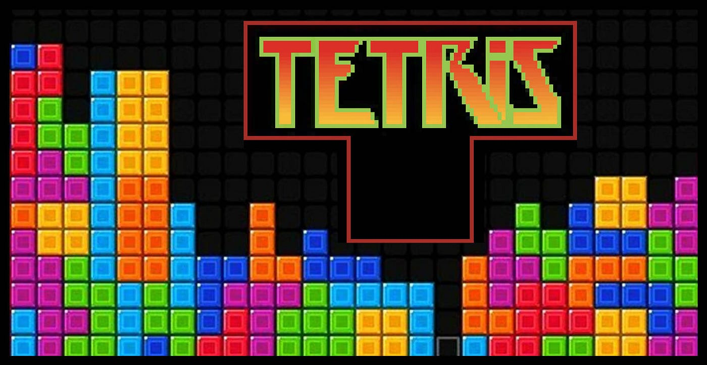
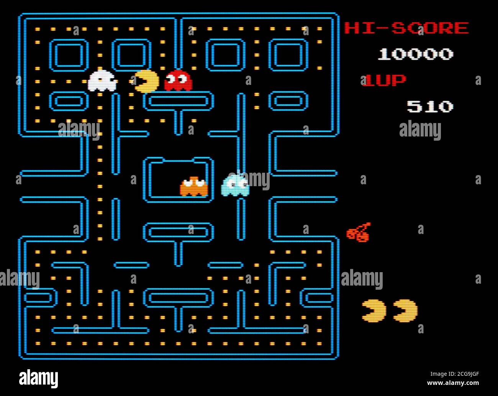
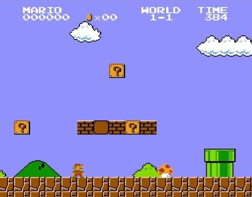
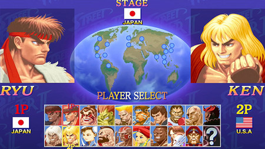
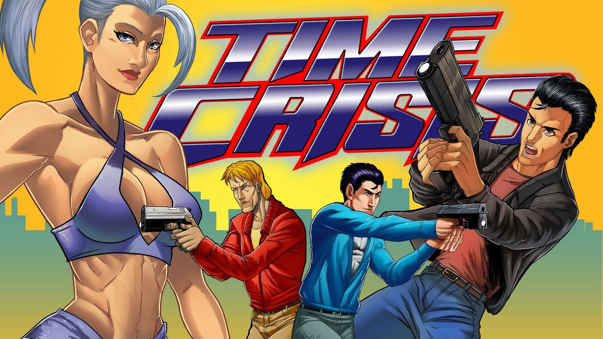

Videojuegos Retro
-
Tetris
El primer lugar no podía ser para otro juego que para Tetris. Su primera versión fue lanzada en 1984, por lo que es de los mejores juegos arcade de los 80. Su éxito fue tal que ha contado con muchas versiones diferente.
 -
Pac-Man
En Pac-Man el objetivo es comer todos los puntos de la pantalla sin que los fantasmas te atrapen. Aunque esto parezca sencillo, nada más lejos de la realidad. El reto es tal que incluso se organizaban torneos para ver quién conseguía más puntos antes de ser eliminado.
 -
Super Mario
Super Mario, el primer videojuego de esta saga de Nintendo. Vio la luz en 1985 para las primeras consolas domésticas de la compañía nipona y su franquicia sigue vigente a día de hoy con títulos como Super Mario 3D World o Super Mario Odyssey.
 -
Street Fighter II
Street Fighter 2 es mucho mejor que su predecesor ya que, además de incluir nuevos personajes se introdujeron algunas novedades jugables reseñables. Por ejemplo ahora se podía mover el personaje en ocho direcciones en lugar de 4.
 -
Time Crisis
Time Crisis tenía un gameplay peculiar donde no controlabas al personaje, sino que éste se movía solo cuando conseguías matar a los enemigos que aparecían en pantalla y pulsar un pedal para cubrirte y no morir.
